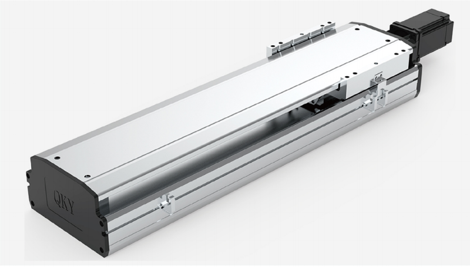
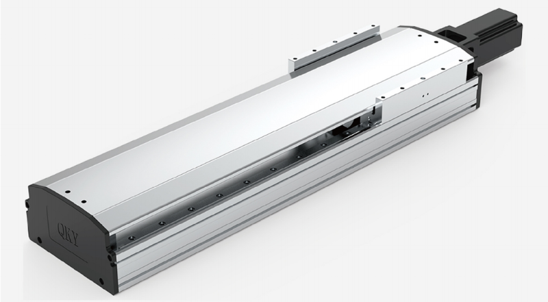

直线模组中所用的电机如何选择，怎么确定用步进电机还是用伺服电机，从这几个方面来分析两种电机的不同之处!

直线模组中的步进电机和伺服电机的区别
一、控制精度不同
两相混合式步进电机步距角一般为3.6度、1.8度，五相混合式步进电机步距角一般为0.72度、0.36度。也有一些高性能的步进电机步距角更小。如四通公司生产的一种用于慢走丝机床的步进电机，其步距角为0.09度；德国百格拉公司（bergerlahr）生产的三相混合式步进电机其步距角可通过拨码开关设置为1.8、0.9、0.72、0.36、0.18、0.09、0.072、0.036，兼容了两相和五相混合式步进电机的步距角。
交流伺服电机的控制精度由电机轴后端的旋转编码器保证。以松下全数字式交流伺服电机为例，对于带标准2500线编码器的电机而言，由于驱动器内部采用了四倍频技术，其脉冲当量为360度/10000=0.036度。对于带17位编码器的电机而言，驱动器每接收217=131072个脉冲电机转一圈，即其脉冲当量为360度/131072=9.89秒。是步距角为1.8度的步进电机的脉冲当量的1/655。
二、低频特性不同
步进电机在低速时易出现低频振动现象。振动频率与负载情况和驱动器性能有关，一般认为振动频率为电机空载起跳频率的一半。这种由步进电机的工作原理所决定的低频振动现象对于机器的正常运转非常不利。当步进电机工作在低速时，一般应采用阻尼技术来克服低频振动现象，比如在电机上加阻尼器，或驱动器上采用细分技术等。
交流伺服电机运转非常平稳，即使在低速时也不会出现振动现象。交流伺服系统具有共振抑制功能，可涵盖机械的刚性不足，并且系统内部具有频率解析机能（fft），可检测出机械的共振点，便于系统调整。
三、矩频特性不同
步进电机的输出力矩随转速升高而下降，且在较高转速时会急剧下降，所以其高工作转速一般在300～600rpm。
交流伺服电机为恒力矩输出，即在其额定转速（一般为2000rpm或3000rpm）以内，都能输出额定转矩，在额定转速以上为恒功率输出。
四、过载能力不同
步进电机一般不具有过载能力。交流伺服电机具有较强的过载能力。以松下交流伺服系统为例，它具有速度过载和转矩过载能力。其大转矩为额定转矩的三倍，可用于克服惯性负载在启动瞬间的惯性力矩。步进电机因为没有这种过载能力，在选型时为了克服这种惯性力矩，往往需要选取较大转矩的电机，而机器在正常工作期间又不需要那么大的转矩，便出现了力矩浪费的现象。
五、运行性能不同
步进电机的控制为开环控制，启动频率过高或负载过大易出现丢步或堵转的现象，停止时转速过高易出现过冲的现象，所以为保证其控制精度，应处理好升、降速问题。交流伺服驱动系统为闭环控制，驱动器可直接对电机编码器反馈信号进行采样，内部构成位置环和速度环，一般不会出现步进电机的丢步或过冲的现象，控制性能更为可靠。
六、速度影响性能不同
步进电机从静止加速到工作转速（一般为每分钟几百转）需要200～400毫秒。交流伺服系统的加速性能较好，以松下msma400w交流伺服电机为例，从静止加速到其额定转速3000rpm仅需几毫秒，可用于要求快速启停的控制场合。

直线模组中的步进电机和伺服电机的区别
如何选型?
1、如何正确选择伺服电机和步进电机
主要视具体应用情况而定，简单地说要确定、负载的性质（如水平还是垂直负载等），转矩、惯量、转速、精度、加减速等要求，上位控制要求（如对端口界面和通讯方面的要求），主要控制方式是位置、转矩还是速度方式。供电电源是直流还是交流电源，或电池供电，电压范围。据此以确定电机和配用驱动器或控制器的型号。
2、如何配用步进电机驱动器?
根据电机的电流，配用大于或等于此电流的驱动器。如果需要低振动或高精度时，可配用细分型驱动器。对于大转矩电机，尽可能用高电压型驱动器，以获得良好的高速性能。
3、2相和5相步进电机有何区别，如何选择?
2相电机成本低，但在低速时的震动较大，高速时的力矩下降快。5相电机则振动较小，高速性能好，比2相电机的速度高30~50%，可在部分场合取代伺服电机。
何时选用直流伺服系统，它和交流伺服有何区别?
4、直流伺服电机分为有刷和无刷电机。
有刷电机成本低，结构简单，启动转矩大，调速范围宽，控制容易，需要维护，但维护方便（换碳刷），产生电磁干扰，对环境有要求。因此它可以用于对成本敏感的普通工业和民用场合。
无刷电机体积小，重量轻，出力大，响应快，速度高，惯量小，转动平滑，力矩稳定。控制复杂，容易实现智能化，其电子换相方式灵活，可以方波换相或正弦波换相。电机免维护，效率很高，运行温度低，电磁辐射很小，长寿命，可用于各种环境。
交流伺服电机也是无刷电机，分为同步和异步电机，目前运动控制中一般都用同步电机，它的功率范围大，可以做到很大的功率。大惯量，高转动速度低，且随着功率增大而快速降低。因而适合做低速平稳运行的应用。
5、使用电机时要注意的问题
上电运行前要作如下检查
1）电源电压是否合适（过压很可能造成驱动模块的损坏）；对于直流输入的+/-极性一定不能接错，驱动控制器上的电机型号或电流设定值是否合适（开始时不要太大）；
2）控制信号线接牢靠，工业现场要考虑屏蔽问题（如采用双绞线）；
3）不要开始时就把需要接的线全接上，只连成基本的系统，运行良好后，再逐步连接。
4）一定要搞清楚接地方法，还是采用浮空不接。
5）开始运行的半小时内要密切观察电机的状态，如运动是否正常，声音和温升情况，发现问题立即停机调整。

直线模组中的步进电机和伺服电机的区别
启英机械致力于成为研发、生产、销售于一体的专业传动厂家，本着“感恩他人，感恩客户”的经营理念，对内严抓产品品质，对外优化客户服务，不断提升品牌知名度和美誉度，模组品牌QKY于2016年研发、投产，现已成为是华南地区较具实力的传动元件服务商。
以贴心的服务为宗旨，大量的备库，精苛的检验，专职的服务工程师，保证能提供舒适的服务条件，让客户获得超出预期的服务价值。以满足客户需求为服务理念，坚持严苛的产品质量检测标准，坚守合理的价格，必将获得广大客户的信赖与支持，实现客户、员工和企业的多方共赢。
 扫一扫
扫一扫
启英机械
东莞市启英机械设备有限公司
地址：广东省东莞市寮步镇沿河南路11号松湖智谷科技产业园F2栋402室
备案号：粤ICP备2023126730号
邮箱：panjie@kee-qy.com